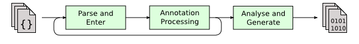

Motivation
我记得去年在组内介绍Annotation和Annotation Process Tool的时候，当时不少小伙伴都认为这个是一个非常棒的工具，用来做代码生成非常合适，但是也存在不少问题，主要的争论点在于，对于大型的项目，其代码量非常大，无论是在IDE内或者在命令行中进行编译，即使只是普通的增量编译，打包，也需要耗上非常长的时间。而普通的APT则需要每次都先拉起一次编译过程，因为实际上整个Annotation Processing是Java编译中的一个步骤，另外如果在Annotation Processing的过程中另外产生了新的代码的话，还需要重新编译生成的代码，这会导致整个编译过程变得更加漫长，如下图，为Java源码编译的过程，摘自OpenJDK官网。

于是，后续我就逐渐开始想方法实现有一个类似Annotation Processor的API的工具，但并不需要拉起Javac进行编译，只需要输入源码即可，然后由开发者自行定义生成代码的规则，即可完成APT的功能。
Research
要实现这样的一个工具，最先迫切的就是需要一个语法解析器，这样子才能从源码中提取出所需要的信息。当时候的想法是自己来实现Tokenizer和Parser（真庆幸大学的时候教编译原理的灭绝大法师的训练，我还记得怎么写哈哈哈哈），但很快我就找到了JavaCC这个工具，这玩意可以说是Java编译器的生成工具，实际上Javac的前端也是这个东西来生成的。但是JavaCC生成的代码非常乱并且其API并不是很好用。当时候我想当JDK中一定是有单独Javac前端独立出来的，于是我又找到了JDK中的tools.jar（OSX下这文件在/Library/Java/JavaVirtualMachines/jdk_version/Contents/Home/lib可以找到），这玩意就是JDK的编译器前端，实现了Tokenizer和Parser，另外还实现了一套visitor模式的API，让使用者可以很方便的遍历整棵抽象语法树。这个库实在是太棒了，当时候就写了一篇文章来介绍这个库的使用。
Development
在了解了tools.jar之后，我便开始了JParserUtil这个项目的开发，主要的目的在于利用tools.jar，重新实现一套简单易用的API来获取源码的信息，例如类的名称，实现的接口信息，继承的类，包含了哪些方法，这些方法的名字，返回值，参数列表及其对应类型，类中变量的信息，名字，变量值的解析，变量的类型等。目前经过几个月的开发，基本上支持了以下的特性：
- 提供了一套API来提取源码库的信息，只需要输入源码的根目录，就会遍历递归解析
- 提取代码中所声明类、Annotation、接口、枚举的信息，名称，修饰符，实现的接口，继承的类等
- 提取类中声明变量的信息，变量的类型（支持提取类型的全限定名），修饰符，值的解析等
- 提取类中方法的信息，方法签名，返回值等
- 通过输入source map（可以从这个项目中生成），支持从
import *获取类的全限定名
更具体的支持以及对应的TODO，可以看下这里的README
Another Beginning
目前JParserUtil项目已经大致完成，因此这个不用拉起编译期的Annotation Processor Tool项目也正式开始的，我将其命名为Projecct Lacie：
至于Lacie是谁，可以参考下蕾西·巴斯卡比鲁
项目已经正式开始，正在处于快速的开发中，目前的road map大致如下：
- 提供一套类似AbstractProcessor以及对应的ProcessingEnvironment，让开发者可以从原有的APT开发中顺利迁移过来。就目前来看，这套API并不算特别复杂，实现起来难度不大。
- 由于JDK中ProcessingEnvironment的初始化是在编译过程中进行的，但我们这里并没有真正的拉起编译，因此还需要另外提供一套易用的接口来负责初始化整个环境。
- 为了证明其可行性，打算另外实现一些使用APT编写的库，例如在android开发领域中大名鼎鼎的AndroidAnnotations，dagger
希望这个项目最后能被使用起来吧~，El Psy Congroo
References
- OpenJDK主页关于Java源码编译过程的介绍：http://openjdk.java.net/groups/compiler/doc/compilation-overview/index.html
- JavaCC主页：https://javacc.java.net/
- 之前写关于
tools.jar的介绍：http://ragnraok.github.io/using-jdk-parser.html